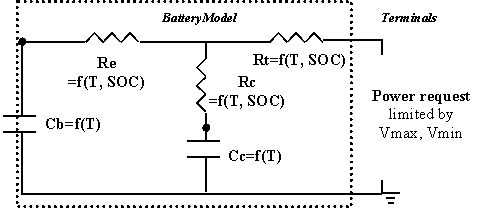
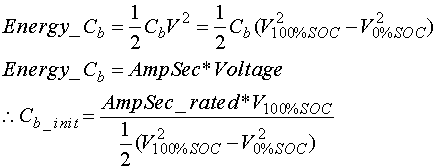

Figure 1: ADVISOR RC Battery Model
 Equation 1
Equation 1
Role of subsystem in vehicle
The Energy Storage System (ESS) block represents the battery pack that stores energy on board the modeled vehicle. This block accepts a power request and returns available/actual power output from the battery, the battery voltage and current, and the battery State of Charge (SOC). By convention, positive power is discharge.
Description of modeling approach
ADVISOR’s RC model is shown in circuit form in Figure 1. The RC model uses power as an input and limits the battery operation to the high and low voltage limits. Power delivered by the battery is limited to the maximum that the equivalent circuit can deliver or the maximum that the motor controller can accept, given its minimum voltage requirement. A simple single-node thermal model of the battery is implemented with parallel flow air cooling. More detail can be found in the battery thermal model explanation. The governing state equations of the model are shown in Equation 2, and implemented in the S-function RC.m.
The capacitor Cb is very large and represents the ample capability of the battery to store charge chemically. The capacitor Cc is small and mostly represents the surface effects of a spiral-wound cell, e.g. the limiting behavior of a battery to deliver current based on time constants associated with the diffusion of materials and chemical reactions.
Figure 1: ADVISOR RC Battery Model
Equation 1
Variables used in subsystem
Implementation
The model was implemented in Matlab via an S-function that was called through a Simulink block. In this way, the parameters of the state space system (Equation 1) could vary with SOC and temperature and then be passed to the S-function. The S-function limited power to keep the battery within operating limits, and calculated SOC and heat generated from the battery. The block diagram implmentation of the model is shown in Figure 2.
Figure 2: Block Diagram implementation of RC battery model
Parameter Generation
Basic physics and select experimental values were used to determine initial values used in the data processing and optimization (e.g. over the HPPC profile) to determine the five unknown parameters (cb, cc, re, rc, rt) for a given temperature or SOC. See Batmodel for more detail.
Bulk Capacitor Cb
The experimentally determined open circuit voltages at 0% SOC and 100% SOC were used along with the rated Amp-hour capacity to determine the energy that could be stored in the bulk capacitor Cb, by using the following equation:
Equation 2
Resistances
To determine initial values for the three resistances, a relationship between the terminal resistance (Rt), the end resistance (Re), and the capacitor resistance (Rc) was assumed. This relationship was that Re and Rc were the same value (R*), and Rt was ½ the value of R*. R* was taken to be Rbulk/1.24 as determined by the step-response impedance of the circuit. The relative relationships were taken from initial values that Saft had applied to their 2-cap model. The bulk resistance was taken from experimental values and determined separately for each SOC (see also Figure 3):
Rbulk=DV/current Equation 3
Figure 3: HPPC values to determine initial R’s and C’s
Surface Capacitor Cc
The initial value for the surface capacitor Cc was derived from the observed time constant for the ‘no-load’ voltage response between voltage V3 and V4 (see Figure 3). The time constant was approximated by the following equation:
 Equation 4
Equation 4
The time constant associated with Cc (see Equation 1) was then used to determine an initial guess for Cc:
 Equation 5
Equation 5
Last Revised: 5/29/01: vhj